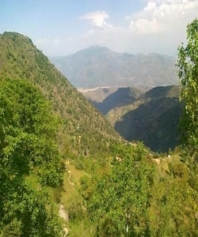

Karamar Mountains

Swabi is the most beautiful and attractive city and capital of Swabi district in KPK. It is warm and moderate climate because it is located between the Indus River and Kabul River. The acquired places you need to visit for the experience of its beauty, culture, and hospitality. If you are in Swabi you must visit these beautiful and historical places of Swabi. The Swabi weather is amazing in winter season. Swabi has many beautiful places to visit in Swabi and most of them are Swabi famous places. Today we will show you the top 5 places to visit in Swabi.
Following are the top 5 places to visit in Swabi: